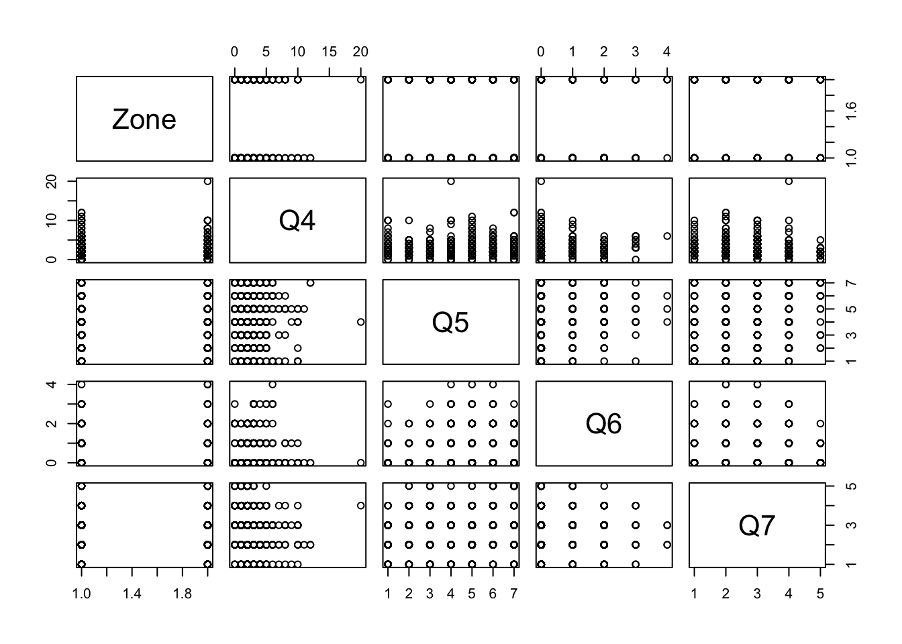
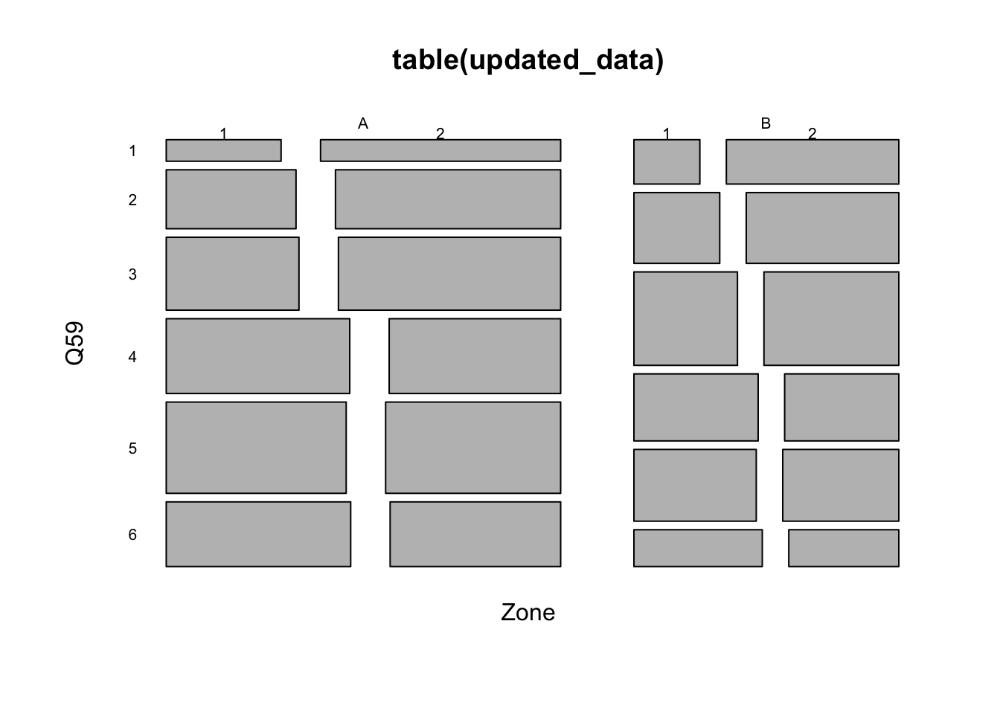

Section 3 Structuring
Data structuring is the process of correcting or removing inaccurate records of a “raw data” so that, after the treatment, the transformed data will be easy to analyze and/or consistent with an existing dataset. More explicitly, the variable names, types, and values will be consistent and uniform. The focus here is on the ‘appearance’ of the data.
3.1 Inspecting the data
In order to structure a dataset, first, we need to be able to detect the anomalies within the data. Types of anomalies include the values that are stored in the wrong format (ex: a number stored as a string), the values that fall outside of the expected range (ex: outliers), values with inconsistent patterns (ex: dates stored as mm/dd/year vs dd/mm/year), trailing spaces in strings (ex: “data” vs “data”), etc.
One method of detecting these anomalies is the summary statistics of the variables, which can be obtained by using summary(). Here is an example using the hurricane data:
## Classes 'tbl_df', 'tbl' and 'data.frame': 1130 obs. of 9 variables:
## $ Zone: chr "A" "A" "A" "A" ...
## ..- attr(*, "format.spss")= chr "A9"
## ..- attr(*, "display_width")= int 1
## $ Q4 : num 2 1 3 3 2 5 3 5 1 2 ...
## ..- attr(*, "label")= chr "Q4. Since the beginning of 2009, how many hurricanes and tropical storms, if any, hit your city or town on or n"| __truncated__
## ..- attr(*, "format.spss")= chr "F2.0"
## ..- attr(*, "display_width")= int 2
## $ Q5 : 'haven_labelled' num 3 4 4 6 1 4 6 4 3 6 ...
## ..- attr(*, "label")= chr "Q5. Generally speaking, when a hurricane or tropical storm is approaching your city or town, how worried do you"| __truncated__
## ..- attr(*, "format.spss")= chr "F1.0"
## ..- attr(*, "labels")= Named num 1 7
## .. ..- attr(*, "names")= chr "Not Worried At All" "Extremely Worried"
## $ Q6 : num 0 0 0 1 0 0 1 0 0 0 ...
## ..- attr(*, "label")= chr "Q6. Since the beginning of 2009, how many times, if ever, did you leave your home for someplace safer to avoid "| __truncated__
## ..- attr(*, "format.spss")= chr "F2.0"
## ..- attr(*, "display_width")= int 2
## $ Q7 : 'haven_labelled' num 3 3 3 1 2 2 3 3 3 2 ...
## ..- attr(*, "label")= chr "Q7. Generally speaking, how prepared were you for the storm(s) you experienced?"
## ..- attr(*, "format.spss")= chr "F1.0"
## ..- attr(*, "labels")= Named num 1 2 3 4 5
## .. ..- attr(*, "names")= chr "Fully Prepared" "Very Prepared" "Moderately Prepared" "A Little Prepared" ...
## $ Q10 : 'haven_labelled' num 2 2 2 2 2 2 2 2 2 2 ...
## ..- attr(*, "label")= chr "Q10. Before Superstorm Sandy hit your area, did you leave your home to go someplace safer; that is, did you evacuate?"
## ..- attr(*, "format.spss")= chr "F1.0"
## ..- attr(*, "labels")= Named num 1 2
## .. ..- attr(*, "names")= chr "Yes" "No"
## $ Q50 : num 1928 1962 1931 1950 1948 ...
## ..- attr(*, "label")= chr "Q50. In what year were you born?"
## ..- attr(*, "format.spss")= chr "F4.0"
## $ Q51 : 'haven_labelled' num 1 1 2 1 1 2 2 2 1 2 ...
## ..- attr(*, "label")= chr "Q51. Are you...?"
## ..- attr(*, "format.spss")= chr "F1.0"
## ..- attr(*, "labels")= Named num 1 2
## .. ..- attr(*, "names")= chr "Male" "Female"
## $ Q59 : 'haven_labelled' num 4 NA 6 5 5 NA NA NA 3 6 ...
## ..- attr(*, "label")= chr "Q59. Last year (in 2013), what was your total HOUSEHOLD income from all sources?"
## ..- attr(*, "format.spss")= chr "F1.0"
## ..- attr(*, "display_width")= int 1
## ..- attr(*, "labels")= Named num 1 2 3 4 5 6
## .. ..- attr(*, "names")= chr "Less than $15,000" "$15,000-$39,999" "$40,000-$69,999" "$70,000-$99,999" ...## Min. 1st Qu. Median Mean 3rd Qu. Max. NA's
## 0.000 2.000 2.000 2.537 3.000 20.000 134## Fully Prepared Very Prepared Moderately Prepared A Little Prepared
## 93 326 438 137
## Not at all Prepared NA's
## 22 114Other ways of exploring the data include:
## # A tibble: 10 x 9
## Zone Q4 Q5 Q6 Q7 Q10 Q50 Q51 Q59
## <chr> <dbl> <dbl+lbl> <dbl> <dbl+lbl> <dbl+l> <dbl> <dbl+l> <dbl+lbl>
## 1 A 2 3 0 3 [Moderate… 2 [No] 1928 1 [Mal… 4 [$70,00…
## 2 A 1 4 0 3 [Moderate… 2 [No] 1962 1 [Mal… NA
## 3 A 3 4 0 3 [Moderate… 2 [No] 1931 2 [Fem… 6 [Over $…
## 4 A 3 6 1 1 [Fully Pr… 2 [No] 1950 1 [Mal… 5 [$100,0…
## 5 A 2 1 [Not Worr… 0 2 [Very Pre… 2 [No] 1948 1 [Mal… 5 [$100,0…
## 6 A 5 4 0 2 [Very Pre… 2 [No] 1938 2 [Fem… NA
## 7 A 3 6 1 3 [Moderate… 2 [No] 1977 2 [Fem… NA
## 8 A 5 4 0 3 [Moderate… 2 [No] 1964 2 [Fem… NA
## 9 A 1 3 0 3 [Moderate… 2 [No] 1976 1 [Mal… 3 [$40,00…
## 10 A 2 6 0 2 [Very Pre… 2 [No] 1964 2 [Fem… 6 [Over $…## # A tibble: 10 x 9
## Zone Q4 Q5 Q6 Q7 Q10 Q50 Q51 Q59
## <chr> <dbl> <dbl+l> <dbl> <dbl+lbl> <dbl+lb> <dbl> <dbl+lb> <dbl+lbl>
## 1 B 1 2 0 4 [A Little P… 2 [No] 1980 1 [Male] 3 [$40,000-…
## 2 B 2 2 0 3 [Moderately… 2 [No] 1977 2 [Fema… 4 [$70,000-…
## 3 B 4 4 1 2 [Very Prepa… 1 [Yes] 1962 2 [Fema… 2 [$15,000-…
## 4 B 2 5 0 1 [Fully Prep… 2 [No] 1946 1 [Male] 5 [$100,000…
## 5 B NA 4 NA 1 [Fully Prep… 1 [Yes] 1957 2 [Fema… 1 [Less tha…
## 6 B 1 4 1 4 [A Little P… 1 [Yes] 1987 2 [Fema… 6 [Over $20…
## 7 B 2 5 0 3 [Moderately… 2 [No] 1953 1 [Male] 4 [$70,000-…
## 8 B NA 4 4 2 [Very Prepa… 2 [No] 1973 2 [Fema… 1 [Less tha…
## 9 B 2 5 0 3 [Moderately… 2 [No] 1980 1 [Male] 5 [$100,000…
## 10 B 2 2 0 4 [A Little P… 2 [No] NA 2 [Fema… 3 [$40,000-…## [1] 1130## [1] 9## [1] "Zone" "Q4" "Q5" "Q6" "Q7" "Q10" "Q50" "Q51" "Q59"We can also plot the data to visualize the distribution of variables

While these plots could help in understanding the dataset, they could be misleading if the variables are not set to their correct data type.
3.2 Data types
One type of anomaly that we may also encounter is the coercion of irrelevant data types to a variables. This is very common for numerically coded variables or ones that has levels.
For example, if we read in the same SPSS data from the Reading data section, we get the coded values instead of the labels.
## # A tibble: 6 x 9
## Zone Q4 Q5 Q6 Q7 Q10 Q50 Q51 Q59
## <chr> <dbl> <dbl+lbl> <dbl> <dbl+lbl> <dbl+l> <dbl> <dbl+l> <dbl+lbl>
## 1 A 2 3 0 3 [Moderate… 2 [No] 1928 1 [Mal… 4 [$70,000…
## 2 A 1 4 0 3 [Moderate… 2 [No] 1962 1 [Mal… NA
## 3 A 3 4 0 3 [Moderate… 2 [No] 1931 2 [Fem… 6 [Over $2…
## 4 A 3 6 1 1 [Fully Pr… 2 [No] 1950 1 [Mal… 5 [$100,00…
## 5 A 2 1 [Not Worr… 0 2 [Very Pre… 2 [No] 1948 1 [Mal… 5 [$100,00…
## 6 A 5 4 0 2 [Very Pre… 2 [No] 1938 2 [Fem… NASo if we run summary(data) right away then we’ll get this unintended result:
## Zone Q4 Q5 Q6
## Length:1130 Min. : 0.000 Min. :1.000 Min. :0.0000
## Class :character 1st Qu.: 2.000 1st Qu.:3.000 1st Qu.:0.0000
## Mode :character Median : 2.000 Median :4.000 Median :0.0000
## Mean : 2.537 Mean :4.235 Mean :0.4191
## 3rd Qu.: 3.000 3rd Qu.:5.000 3rd Qu.:1.0000
## Max. :20.000 Max. :7.000 Max. :4.0000
## NA's :134 NA's :111 NA's :116
## Q7 Q10 Q50 Q51 Q59
## Min. :1.000 Min. :1.000 Min. : 19 Min. :1.00 Min. :1.000
## 1st Qu.:2.000 1st Qu.:2.000 1st Qu.:1944 1st Qu.:1.00 1st Qu.:3.000
## Median :3.000 Median :2.000 Median :1955 Median :2.00 Median :4.000
## Mean :2.674 Mean :1.796 Mean :1944 Mean :1.55 Mean :3.715
## 3rd Qu.:3.000 3rd Qu.:2.000 3rd Qu.:1966 3rd Qu.:2.00 3rd Qu.:5.000
## Max. :5.000 Max. :2.000 Max. :1992 Max. :2.00 Max. :6.000
## NA's :114 NA's :123 NA's :47 NA's :38 NA's :112Q4 and Q50 are the only variables that are supposed to be numeric. But here everything is treated as numeric which is incorrect. Also, it is best if we read Zone as factor as well so that we find out the possible values.
We can easily convert data types into factor using dplyr::mutate_at() and applying as.factor function to the variables.
And now we can get the full summary statistics that we want:
## Zone Q4 Q5 Q6
## A:684 Min. : 0.000 5 :244 Min. :0.0000
## B:446 1st Qu.: 2.000 4 :211 1st Qu.:0.0000
## Median : 2.000 3 :169 Median :0.0000
## Mean : 2.537 6 :129 Mean :0.4191
## 3rd Qu.: 3.000 2 :104 3rd Qu.:1.0000
## Max. :20.000 (Other):162 Max. :4.0000
## NA's :134 NA's :111 NA's :116
## Q7 Q10 Q50 Q51
## Fully Prepared : 93 Yes :205 Min. : 19 Male :491
## Very Prepared :326 No :802 1st Qu.:1944 Female:601
## Moderately Prepared:438 NA's:123 Median :1955 NA's : 38
## A Little Prepared :137 Mean :1944
## Not at all Prepared: 22 3rd Qu.:1966
## NA's :114 Max. :1992
## NA's :47
## Q59
## Less than $15,000: 81
## $15,000-$39,999 :169
## $40,000-$69,999 :215
## $70,000-$99,999 :190
## $100,000-$199,999:220
## Over $200,000 :143
## NA's :112As we can see from the summary, there might be some anomalies with the variables:
Zone: as most of the respondents are from Zone A. But this is basically related to the survey method which would later require that some weighting of the variables would be applied.Q4: Number of storms experienced: where the mean value is 2.5 but some response have the value of 20.Q50: Birth year: where some respondent answered 19 which is incorrect. Also this column is probably better if it’s in age instead of birth year.
We can also notice some missing values.
3.3 Subsetting and Filtering
We can remove incorrect or missing row values by using dplyr::filter:
# Removing rows where birth year is irrelevant
# Here we decided that all birth year must be greater 1900
updated_data <- data %>% filter(Q50 > 1900)
# Now if we re-run its summary
summary(updated_data$Q50)## Min. 1st Qu. Median Mean 3rd Qu. Max.
## 1908 1945 1955 1956 1966 1992# Removing rows with birth year greater than 1900 and missing responses for Q4
updated_data <- data %>% filter(Q50 > 1900, !is.na(Q4))
summary(updated_data$Q50)## Min. 1st Qu. Median Mean 3rd Qu. Max.
## 1908 1944 1954 1955 1965 1990## Min. 1st Qu. Median Mean 3rd Qu. Max.
## 0.000 2.000 2.000 2.522 3.000 20.000We can also select only the variables that we are interested in using dplyr::select:
# Creating a new dataframe with only zone, gender, and income column
updated_data <- data %>% select(Zone, Q59, Q51)
head(updated_data, 10)## # A tibble: 10 x 3
## Zone Q59 Q51
## <fct> <fct> <fct>
## 1 A $70,000-$99,999 Male
## 2 A <NA> Male
## 3 A Over $200,000 Female
## 4 A $100,000-$199,999 Male
## 5 A $100,000-$199,999 Male
## 6 A <NA> Female
## 7 A <NA> Female
## 8 A <NA> Female
## 9 A $40,000-$69,999 Male
## 10 A Over $200,000 Female
It is also possible to split the dataset into multiple dataframe by number of rows using split().
# To split the dataset into multiple dataframe of 10 rows each
max_number_of_rows_per_dataframe <- 10
total_number_rows_in_the_current_dataset <- nrow(data)
sets_of_10rows_dataframes <- split(data,
rep(1:ceiling(total_number_rows_in_the_current_dataset/max_number_of_rows_per_dataframe),
each=max_number_of_rows_per_dataframe,
length.out=total_number_rows_in_the_current_dataset)
)
# Here are the first 2 dataframes
sets_of_10rows_dataframes[[1]] # or sets_of_10rows_dataframes$`1`## # A tibble: 10 x 9
## Zone Q4 Q5 Q6 Q7 Q10 Q50 Q51 Q59
## <fct> <dbl> <fct> <dbl> <fct> <fct> <dbl> <fct> <fct>
## 1 A 2 3 0 Moderately Pr… No 1928 Male $70,000-$99…
## 2 A 1 4 0 Moderately Pr… No 1962 Male <NA>
## 3 A 3 4 0 Moderately Pr… No 1931 Fema… Over $200,0…
## 4 A 3 6 1 Fully Prepared No 1950 Male $100,000-$1…
## 5 A 2 Not Worried … 0 Very Prepared No 1948 Male $100,000-$1…
## 6 A 5 4 0 Very Prepared No 1938 Fema… <NA>
## 7 A 3 6 1 Moderately Pr… No 1977 Fema… <NA>
## 8 A 5 4 0 Moderately Pr… No 1964 Fema… <NA>
## 9 A 1 3 0 Moderately Pr… No 1976 Male $40,000-$69…
## 10 A 2 6 0 Very Prepared No 1964 Fema… Over $200,0…## # A tibble: 10 x 9
## Zone Q4 Q5 Q6 Q7 Q10 Q50 Q51 Q59
## <fct> <dbl> <fct> <dbl> <fct> <fct> <dbl> <fct> <fct>
## 1 A 2 Extremely Wo… 2 Fully Prepared Yes 1937 Fema… <NA>
## 2 A 3 5 0 Very Prepared No 1943 Male $70,000-$99…
## 3 A 2 Extremely Wo… 0 Very Prepared No 1954 Fema… $100,000-$1…
## 4 A 2 5 0 Very Prepared No 1959 Fema… $100,000-$1…
## 5 A 4 Not Worried … NA Very Prepared No 1936 Fema… Over $200,0…
## 6 A 1 3 1 Moderately Pr… Yes 1963 Male Over $200,0…
## 7 A 2 3 1 Very Prepared Yes 1950 Fema… $100,000-$1…
## 8 A 4 6 0 Moderately Pr… No NA <NA> <NA>
## 9 A 0 4 0 Very Prepared No 1941 Male $100,000-$1…
## 10 A NA <NA> NA <NA> <NA> 1952 Fema… $100,000-$1…3.4 Changing cell values
As we mentionned earlier, it is best if Q50 is stored as an age variable instead of the default birth year. Q50 is a numeric variable and we can simply change it by using dplyr::mutate()
# Replacing Q50 values to their age in 2020
updated_data <- data %>% mutate(Q50 = 2020 - Q50)
head(updated_data, 10)## # A tibble: 10 x 9
## Zone Q4 Q5 Q6 Q7 Q10 Q50 Q51 Q59
## <fct> <dbl> <fct> <dbl> <fct> <fct> <dbl> <fct> <fct>
## 1 A 2 3 0 Moderately Pr… No 92 Male $70,000-$99…
## 2 A 1 4 0 Moderately Pr… No 58 Male <NA>
## 3 A 3 4 0 Moderately Pr… No 89 Fema… Over $200,0…
## 4 A 3 6 1 Fully Prepared No 70 Male $100,000-$1…
## 5 A 2 Not Worried … 0 Very Prepared No 72 Male $100,000-$1…
## 6 A 5 4 0 Very Prepared No 82 Fema… <NA>
## 7 A 3 6 1 Moderately Pr… No 43 Fema… <NA>
## 8 A 5 4 0 Moderately Pr… No 56 Fema… <NA>
## 9 A 1 3 0 Moderately Pr… No 44 Male $40,000-$69…
## 10 A 2 6 0 Very Prepared No 56 Fema… Over $200,0…# It is also possible to leave Q50 untouched and store the results into a new column
updated_data <- data %>% mutate(age = 2020 - Q50)
head(updated_data, 10)## # A tibble: 10 x 10
## Zone Q4 Q5 Q6 Q7 Q10 Q50 Q51 Q59 age
## <fct> <dbl> <fct> <dbl> <fct> <fct> <dbl> <fct> <fct> <dbl>
## 1 A 2 3 0 Moderately … No 1928 Male $70,000-$… 92
## 2 A 1 4 0 Moderately … No 1962 Male <NA> 58
## 3 A 3 4 0 Moderately … No 1931 Fema… Over $200… 89
## 4 A 3 6 1 Fully Prepa… No 1950 Male $100,000-… 70
## 5 A 2 Not Worrie… 0 Very Prepar… No 1948 Male $100,000-… 72
## 6 A 5 4 0 Very Prepar… No 1938 Fema… <NA> 82
## 7 A 3 6 1 Moderately … No 1977 Fema… <NA> 43
## 8 A 5 4 0 Moderately … No 1964 Fema… <NA> 56
## 9 A 1 3 0 Moderately … No 1976 Male $40,000-$… 44
## 10 A 2 6 0 Very Prepar… No 1964 Fema… Over $200… 56## Min. 1st Qu. Median Mean 3rd Qu. Max.
## 28.00 54.00 65.00 64.14 75.00 112.00For a categorical variable, we use a different function dplyr::recode_factor() or dplyr::recode(). We will apply this to Q5 as we have noticed in the previous section that not all of its values were labelled from SPSS. Here is its summary:
## Not Worried At All 2 3 4
## 58 101 164 197
## 5 6 Extremely Worried NA's
## 232 123 97 104Looking back at the questionnare, here is how it was phrased:

Because the survey itself doesn’t have labels, the recoding will be up to the user. Here we chose to remove replace the extreme values with 1 and 7. As mentionned in the documentation: dplyr::recode() will preserve the existing order of levels while changing the values, and dplyr::recode_factor() will change the order of levels to match the order of replacements.
# Recoding Q5
recoded.with.recode <- recode(data$Q5, `Not Worried At All`="1", `Extremely Worried`="7")
summary(recoded.with.recode)## 1 2 3 4 5 6 7 NA's
## 58 101 164 197 232 123 97 104recoded.with.recode_factor <- recode_factor(data$Q5, `Not Worried At All`="1", `Extremely Worried`="7")
summary(recoded.with.recode_factor)## 1 7 2 3 4 5 6 NA's
## 58 97 101 164 197 232 123 104We can also change cell values without external libraries like dplyr by running the following code:
# Add column age where the values are 2020 - Q50
data$age <- 2020 - data$Q50
# Replace Q5 with value "Not Worried At All" to "1"
data$Q5[data$Q5 == "Not Worried At All"] <- 1## Warning in `[<-.factor`(`*tmp*`, data$Q5 == "Not Worried At All", value =
## structure(c(3L, : invalid factor level, NA generated3.5 Pivoting the dataset
In some cases, we may want to split a column based on values, or merge multiple columns into fewer columns. These process can be done using tidyr package. For example, to convert the dataframe into long-format with only Zone, question, and value as columns:
library(tidyr)
# We have to pivot by variable type
# Pivot longer for factor variables
pivoted.longer <- data %>%
select_if(is.factor) %>%
pivot_longer(-Zone, names_to = "question", values_to = "value")
pivoted.longer## # A tibble: 5,380 x 3
## Zone question value
## <fct> <chr> <fct>
## 1 A Q5 3
## 2 A Q7 Moderately Prepared
## 3 A Q10 No
## 4 A Q51 Male
## 5 A Q59 $70,000-$99,999
## 6 A Q5 4
## 7 A Q7 Moderately Prepared
## 8 A Q10 No
## 9 A Q51 Male
## 10 A Q59 <NA>
## # … with 5,370 more rows# Then we can reshape it back to the original
pivoted.wider <- pivoted.longer %>%
group_by(question) %>% mutate(row = row_number()) %>%
pivot_wider(names_from = question, values_from = value) %>%
select(-row)
pivoted.wider## # A tibble: 1,076 x 6
## Zone Q5 Q7 Q10 Q51 Q59
## <fct> <fct> <fct> <fct> <fct> <fct>
## 1 A 3 Moderately Prepared No Male $70,000-$99,999
## 2 A 4 Moderately Prepared No Male <NA>
## 3 A 4 Moderately Prepared No Female Over $200,000
## 4 A 6 Fully Prepared No Male $100,000-$199,999
## 5 A <NA> Very Prepared No Male $100,000-$199,999
## 6 A 4 Very Prepared No Female <NA>
## 7 A 6 Moderately Prepared No Female <NA>
## 8 A 4 Moderately Prepared No Female <NA>
## 9 A 3 Moderately Prepared No Male $40,000-$69,999
## 10 A 6 Very Prepared No Female Over $200,000
## # … with 1,066 more rowstidyr::spread() and tidyr::gather() are the outdated equivalent of tidyr::pivot_wider() and tidyr::pivot_longer().
To merge or split columns, we can use tidyr::unite() or tidyr::separate(). For example, to merge Q7 and Q10:
# Creating a new column with responses from both Q7 and Q10
merged <- data %>% unite("Q7_Q10", Q7:Q10, sep = "__", remove = TRUE, na.rm = FALSE)
merged## # A tibble: 1,076 x 9
## Zone Q4 Q5 Q6 Q7_Q10 Q50 Q51 Q59 age
## <fct> <dbl> <fct> <dbl> <chr> <dbl> <fct> <fct> <dbl>
## 1 A 2 3 0 Moderately Prepared… 1928 Male $70,000-$99,9… 92
## 2 A 1 4 0 Moderately Prepared… 1962 Male <NA> 58
## 3 A 3 4 0 Moderately Prepared… 1931 Fema… Over $200,000 89
## 4 A 3 6 1 Fully Prepared__No 1950 Male $100,000-$199… 70
## 5 A 2 <NA> 0 Very Prepared__No 1948 Male $100,000-$199… 72
## 6 A 5 4 0 Very Prepared__No 1938 Fema… <NA> 82
## 7 A 3 6 1 Moderately Prepared… 1977 Fema… <NA> 43
## 8 A 5 4 0 Moderately Prepared… 1964 Fema… <NA> 56
## 9 A 1 3 0 Moderately Prepared… 1976 Male $40,000-$69,9… 44
## 10 A 2 6 0 Very Prepared__No 1964 Fema… Over $200,000 56
## # … with 1,066 more rows## # A tibble: 1,076 x 10
## Zone Q4 Q5 Q6 Q7 Q10 Q50 Q51 Q59 age
## <fct> <dbl> <fct> <dbl> <chr> <chr> <dbl> <fct> <fct> <dbl>
## 1 A 2 3 0 Moderately Pre… No 1928 Male $70,000-$99,… 92
## 2 A 1 4 0 Moderately Pre… No 1962 Male <NA> 58
## 3 A 3 4 0 Moderately Pre… No 1931 Fema… Over $200,000 89
## 4 A 3 6 1 Fully Prepared No 1950 Male $100,000-$19… 70
## 5 A 2 <NA> 0 Very Prepared No 1948 Male $100,000-$19… 72
## 6 A 5 4 0 Very Prepared No 1938 Fema… <NA> 82
## 7 A 3 6 1 Moderately Pre… No 1977 Fema… <NA> 43
## 8 A 5 4 0 Moderately Pre… No 1964 Fema… <NA> 56
## 9 A 1 3 0 Moderately Pre… No 1976 Male $40,000-$69,… 44
## 10 A 2 6 0 Very Prepared No 1964 Fema… Over $200,000 56
## # … with 1,066 more rows